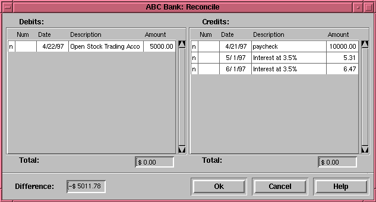

The Reconcile window is for reconciling the user's records at the end of the month when the bank statement comes. For example, if you write a check for something, enter the transaction. When you know that the check has cleared, you can click the field between the description and payment fields, and it changes from a 'n' to a 'c', indicating the transaction has cleared. At the end of the month, open the reconcile window, and xacc will prompt you to enter the ending balance from the bank statement. Then the reconcile window will pop-up, and you will see a credit and a debit column that lists all the non-reconciled transactions. You can then check off the transactions that appear in the bank statement, and verify the amount fields are correct. At the bottom of the window is a difference field, which should be $0.00 when you are done reconciling. If it isn't then you missed a transaction, or one of the amounts is wrong. When you press "Ok", then the 'n' or 'c' in the transactions that were checked off will change to a 'y'. When you change anything in a reconciled transaction, a verify dialog box should pop-up, but this doesn't seem to be happening anymore. Also, the "cleared" total at the bottom seems to display $0.00 regardless of what transactions are cleared or reconciled. The "cleared" total should display the total of only the transactions that have been cleared ('c') or reconciled ('y').